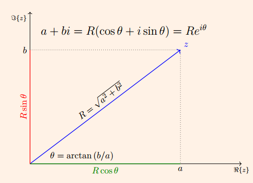

Números complejos
Contents
Números complejos¶
\[ \begin{align}\begin{aligned}\require{color}
\newcommand{\alert}[1]{{\color{RedOrange} #1}}
\newcommand{\notation}[2]{\underset{\color{MidnightBlue}\text{#2}}{#1}}
\newcommand{\simbolo}[2]{\underset{\color{MidnightBlue}#2}{#1}}
\newcommand{\notationbrace}[2]{{\underbrace{#1}_{\color{MidnightBlue}\text{#2}}}}
\DeclareMathOperator{\dd}{\,d\!}
\DeclareMathOperator{\E}{\mathbb{E}{}}
\DeclareMathOperator{\Var}{Var{}}
\DeclareMathOperator{\Cov}{Cov{}}
\DeclareMathOperator{\Lag}{L{}}
\DeclareMathOperator*{\argmin}{argmin}
\DeclareMathOperator*{\argmax}{argmax}
\DeclareMathOperator{\Prob}{\mathbb{P}}
\newcommand{\marginal}[2]{\frac{\partial #1}{\partial #2}}
\newcommand{\MAT}[1]{\begin{bmatrix} #1 \end{bmatrix}}
\newcommand{\mat}[1]{\left[\begin{smallmatrix} #1 \end{smallmatrix}\right]}\\\begin{split}\DeclareMathOperator{\R}{\mathbb{R}}
\DeclareMathOperator{\X}{\mathbf{x}}
\DeclareMathOperator{\y}{\mathbf{y}}
\DeclareMathOperator{\h}{\mathbf{h}}
\newcommand{\stackEq}[1]{\MAT{#1_1 \\ #1_2 \\ \vdots \\ #1_M}}
\newcommand{\e}{\mathbf{\epsilon}}
\newcommand{\Y}{\mathbf{Y}}
\newcommand{\estimator}[2]{{\hat{#1}^{\text{#2}}}}
\newcommand{\estimate}[2]{\underset{(#2)}{#1}}
\DeclareMathOperator{\plim}{plim}
\newcommand{\PLIM}[2]{#1\xrightarrow{p} #2}\end{split}\end{aligned}\end{align} \]
import plotly.express as px
import numpy as np
import plotly.io as pio
pio.renderers.default = "colab" if 'google.colab' in str(get_ipython()) else 'iframe'
Representación de números complejos¶

Multiplicación de números complejos¶
Si \( z = Re^{i\theta} \) y \( w = Se^{i\varphi} \) , entonces su producto es
\[\begin{equation*}
zw = RS e^{i(\theta+\varphi)}
\end{equation*}\]
Así, si elevamos \( z \) a la \( n \) -ésima potencia:
\[\begin{equation*}
z^n = \left(Re^{i\theta}\right)^n = R^ne^{in\theta}
\end{equation*}\]
Es decir
\[\begin{equation*}
\lim\limits_{n\to\infty}z^n = 0 \Leftrightarrow | R | < 1
\end{equation*}\]
Ejemplos de potencia de números complejos¶
Cuando el módulo o valor absoluto \( R \) de un número complejo está por debajo de 1, su potencia tiende a cero conforme el exponente tiende a infinito:
𝜃 = 30
t = np.arange(48)
px.scatter_polar(r=0.95**t, theta=t*𝜃,
animation_frame=t,
start_angle=0,
range_r=[0, 1.1],
direction='counterclockwise')
Por el contrario, si \( R > 1 \) , la potencia tenderá alejarse cada vez más del origen:
px.scatter_polar(r=1.03**t, theta=t*𝜃,
animation_frame=t,
start_angle=0,
range_r=[0, 4.5],
direction='counterclockwise')
En el caso intermedio en que \( R = 1 \) , la potencia se mantendrá orbitando en la circunferencia unitaria:
px.scatter_polar(r=1.0**t, theta=t*𝜃,
animation_frame=t,
start_angle=0,
range_r=[0, 1.5],
direction='counterclockwise')